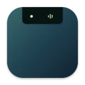

Your music, within reach.
Apple Music and Spotify, with artwork, real playback progress, and controls. Track changes simply settle into place.

glance. Get GlanceMusic, focus, and the moments that need you.
A quiet little home for it all, right at the top of your Mac.
macOS 14+ · Apple silicon & Intel · Open source
Now Playing · Artwork appearance. Sample playback; no connection to your Mac.
RIGHT THERE. ONLY WHEN YOU NEED IT.
Start with music and a focus timer. Add what helps.
You choose what earns a place in your notch.
Apple Music and Spotify, with artwork, real playback progress, and controls. Track changes simply settle into place.
Make the timer yours: Classic, Minimal, or Artwork appearance; custom focus, short-break, and long-break durations; editable minute presets for Classic and Artwork (Minimal offers 5, 15, 25, and 50 minutes); sessions before a long break; automatic starts for breaks and focus; sound; and a notch alert when a session finishes.
Opt into Claude Code, battery, or network events. Temporary, prioritized interruptions return you to where you were.
SMALL BY DESIGN
One focused screen at a time. Quiet by default.
No dashboard to manage. Just a little more breathing room.
Activity analysis stays local. Spotify artwork can be fetched from its CDN. You decide which optional providers run.
Add, reorder, or disable screens. Context awareness and coding activity are opt-in.
On a display without a notch, Glance finds a compact home at the top center.
A SMALL ADDITION. A NICER DAY.
Download a DMG from GitHub Releases, or build from source.
Requires macOS Sonoma 14 or later.